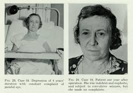
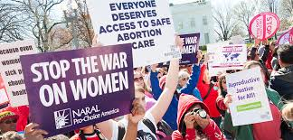
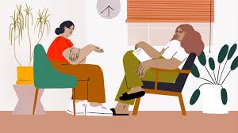

How Society Impacts Women and Their Mental Health
Despite societal advances in the feminist movement and innovations in mental healthcare for women, society still holds a significant negative impact on the mental health status of women and heavily influence the stigmas that surround mental health in women and how it is approached by professionals today.
During the past, actions have been made in whole societies to impact the mental health of women.
Below are two instances in the past of when society has specifically targeted women.
Click on the images to find out the background on the events listed below, then look below the image to learn about how they have held an impact on women's mental health and the impact on mental healthcare/treatments they recieved.

The Salem Witch Trials
During the Salem Witch Trials, the government was suspecting women who did not adhere to the government's expectations of them at the time of being a witch and actively performing witchcraft.
The women suspected were given unfair trials, and in severe cases were killed in a very public fashion.
The entire town would participate, especially women who did not want to be a suspect of witchcraft themselves.
The seeking out of these women and sentencing them to death without real evidence of witchcraft and the creation of mass hysteria from accusing women led to an increase in the amount of stress placed onto women during that period.
The stress alone was enough to make a detriment in the mental status of the women at the time, but it was known that in some cases the daughters and offspring of the women accused were also suspected of being a witch without evidence.
That definitely made the mental status of the offspring of these accused women significantly worse, knowing that they would certainly get an unjust trial and potentially gruesome public deaths, and knowing that they were going to die for a reason so trivial would surely make them depressed or anxious.
 The Lobotomy
The lobotomy, as explained by the background above, was an incredibly invasive procedure which targeted the frontal lobe using ice picks to attempt to combat mental illnesses.
Most of the time, the procedure did not combat or completely cure the mental illness it was trying to fix. In severe cases, the symptoms of the illness became more severe and in some instances, the subjects of the surgery died.
The surgery itself did not target women, however, women who had mental illnesses were more likely to be recommended to get the procedure to cure their illness than a man who had a mental illness would have been.
In this sense, the doctors did not know how to treat most women with mental illnesses, and most of the women being funnelled into mental facilities were all labeled under the general nonspecific diagnosis of hysteria.
Hysteria in nature was sexist in its origin, it was coined to originate in a woman's womb. It has a very long history of being a catchall and gender-specific diagnosis for women when doctors at the time did not want to search for what was wrong with the women.
The targeting of women through the diagnosis of hysteria and also through the practice of the lobotomy held extremely negative effect on the treatment and diagnosis of the mental health of women.
Treatment was not focusing on getting rid of the issues at hand, and the general diagnosis of women with the term hysteria made it so that women who did have a serious illness were not being treated for the right thing.
Now, moving into more modern topics, the following is how society today is effecting women and their mental health along with the potential benefits of improving methods of therapy and treatment options to better exploit society and it's role in mental health and use it as a form of healing.
 The War On Women, Title X, and The Fight For Reproductive Rights
As the website above gives some background on, women in modern society are fighting for their rights to their bodies. Abortion, despite court cases like Roe v. Wade and legislation like Title X keeping the service and procedure legal, is being argued publicly that it should be illegal and defunded by the government.
In some cases oral contraceptives are becoming more limited and insurances are not covering them in their plans.
Some girls and women are protesting for their rights to govern their own bodies and have access to contraceptives so that they can govern their own bodies.
The ongoing fight for reproductive rights and consistant access to contraceptives is definitely detrimental to the mental status of women in the way that there is more anxiety over losing the freedom to choose what to do with their bodies.
Limited access to contraceptives means that it is more likely for a sexually active woman to get pregnant, and if they get pregnant and do not want the child and abortion is no longer legal, there is no option other than to potentially have the child and put it up for adoption or raise it.
The strain and physical labor that pregnancy puts onto a woman's body is excruciating, not to mention it puts severe stress on the women mentally as well.
Potentially taking away a woman's right to not have to go through everything pregnancy encompasses both physically and emotionally means that some women who do not want to go through it would have to, meaning more mental health problems and more treatments would have to be administered on these women.

Mass Media and Unrealistic Standards Of Beauty in Women
Women in society have an incredible amount of pressure on them at all times to fit the societal standards of beauty and to ensure that they fit the mold of the perfect women which the media presents.
These beauty standards alone prove to be very harmful and frankly unattainable in their nature, and some women go through a lot of procedures and spend a lot of energy ensuring that they meet the standard of women that society places upon them.
The need to fit a certain mold affects women in how they eat, how they excercise, the stuff that they buy and in many other similar ways, and in some cases it can hold some very harmful effects.
The changing of dietary habits to attempt to get a slimmer figure and meet the societal standard of beauty can lead to eating disorders.
This mental and physical strain on the body of these young women, along with the added mental illness, can affect their lives greatly and even land them in a hospital bed.
Body dysmorphia and changing of physical features through surgery places a lot of strain on the physical body of these women, and can also place a lot of strain mentally worrying about the finances of paying for these surgeries and also the strain of wanting to be accepted by society.
This then creates a harmful effect of societal beauty standards and the mental health of the women affected are negatively effected by the standards and the pressures of having to mold themselves to be affected.
 How We Can Exploit Relationships With Society to Further Theraputic Methods
The link above is to a scholarly article which discusses furthering and updating methods of therapy in order to exploit the past and the present turmoils between women and the society around them.
Methods of therapy are everchanging and updating to suit the needs of different mental illnesses, as they are also everchanging and we are learning more and more about them everyday.